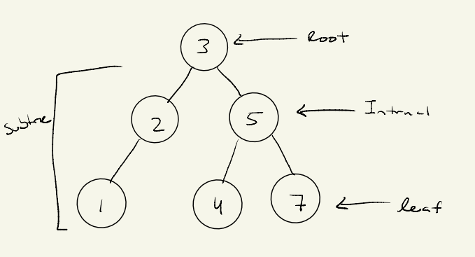

Basic Properties of BST
- Each node has at most two children: left and right.
- The left subtree contains only nodes with values less than the parent node.
- The right subtree contains only nodes with values greater than the parent node.
- No duplicate values are allowed in a BST.
Height and Balance
The height of a BST is the longest path from the root to a leaf node.
A BST is balanced if the height difference between left and right subtrees is minimal.
Time Complexity
| Operation | Best Case | Average Case | Worst Case |
|---|---|---|---|
| Insertion | O(log n) | O(log n) | O(n) (unbalanced) |
| Search | O(log n) | O(log n) | O(n) (unbalanced) |
| Deletion | O(log n) | O(log n) | O(n) (unbalanced) |
Example
The following diagram illustrates the properties of a BST:
